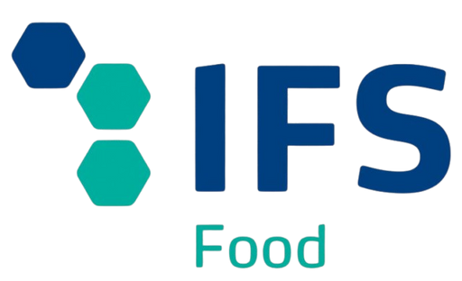
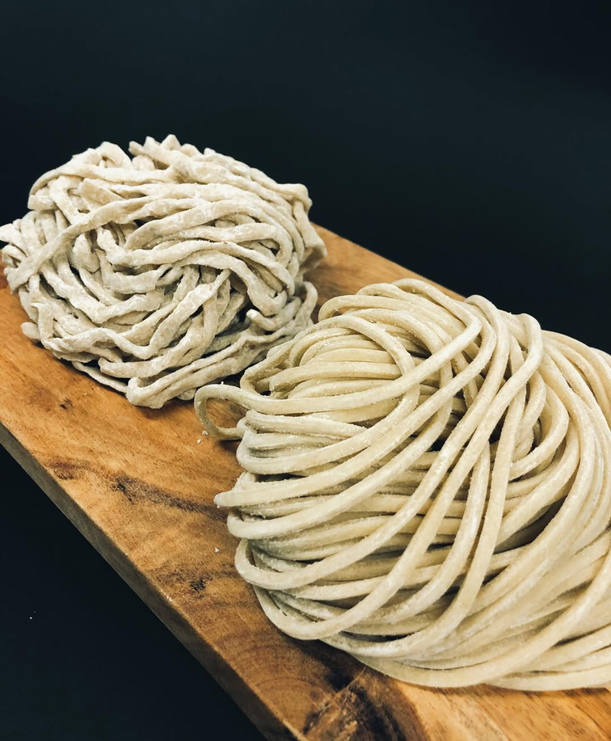
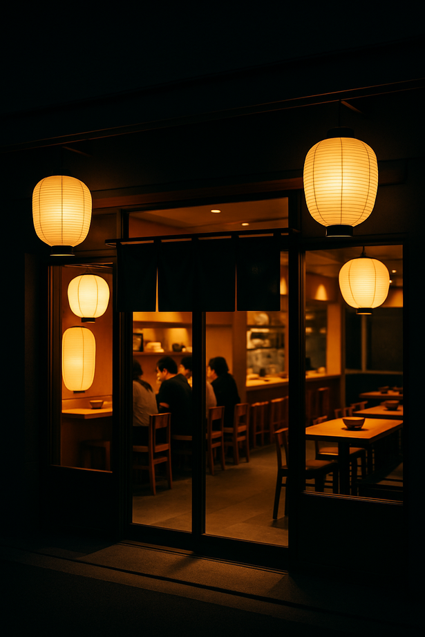
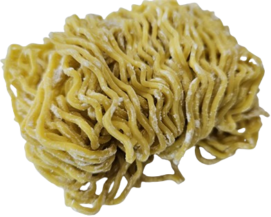
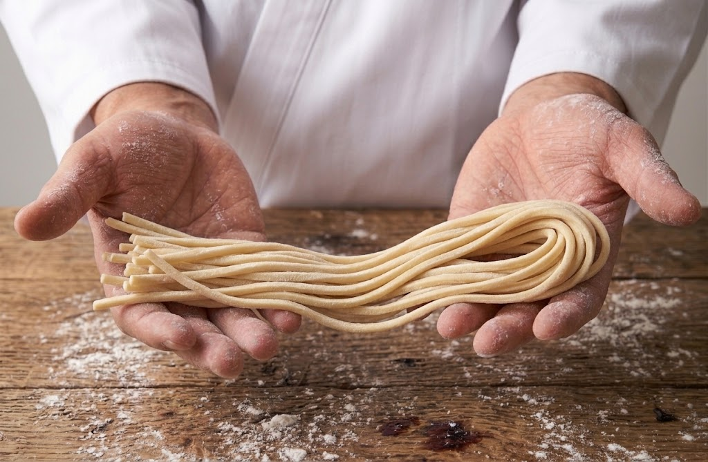
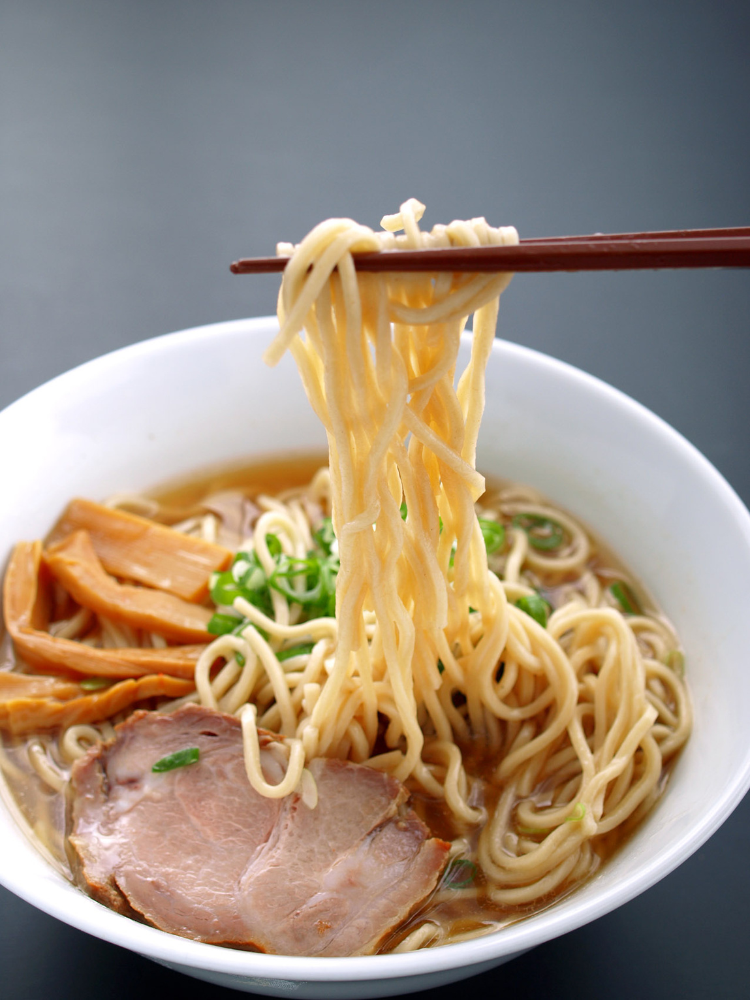
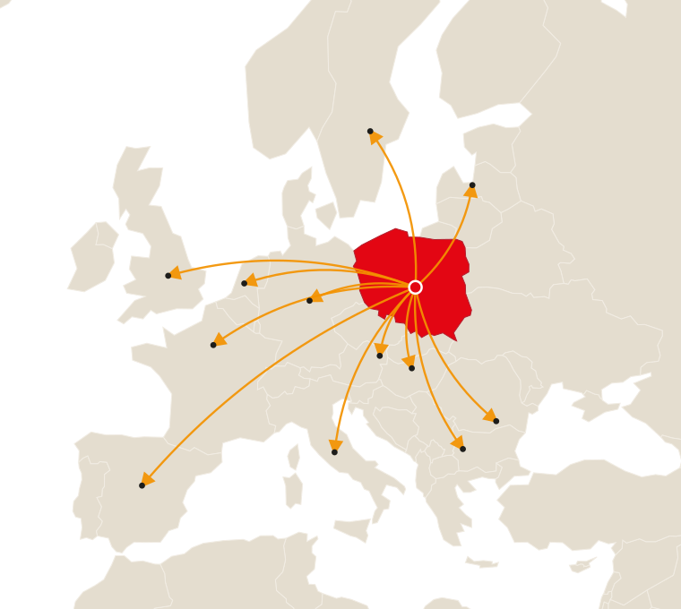
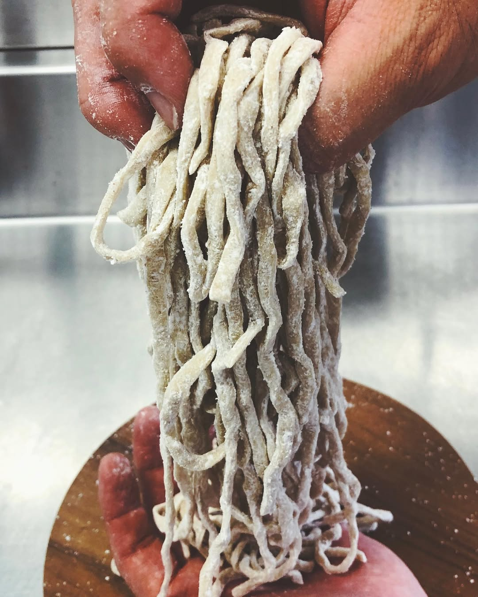

With or without egg
With or without egg
Sapporo style
札幌
Springy curls with medium thickness that hold body in rich miso and shoyu broths.
- Portion
- 130 g
- Allergens
- Gluten (egg optional)
- Shelf life
- 12 months at −18 °C

Japanese recipes and seventy years of Kanno family craft, now made in central Poland. We supply ramen kitchens and retail with frozen noodles of consistent texture worthy of any chef.

For over 70 years, Kanno's family has been perfecting the art of noodle-making in the heart of Tokyo. Since 1949, their passion and precision have brought authentic Japanese noodles to thousands of restaurants across Japan and other regions of Asia, North America, and Australia. Kanno's legacy is grounded in deep knowledge, craftsmanship, and a clear mission to provide safe, high-quality products, contribute to the development of noodle food culture.
The joint-venture between Mr. Yoshio Kanno and a Polish family-owned business marked the beginning of a unique international partnership. An independent facility was established in Poland, equipped with Japanese production machinery, and supported by Kanno's experienced food technologists. Together, we bring the authenticity of Japanese noodles, built on tradition, mutual trust and a shared commitment to quality.



Every style follows a traditional Japanese recipe, bringing together authenticity with practical application.
Formats, portion weights and packaging are adapted to each Partner.
With or without egg
Springy curls with medium thickness that hold body in rich miso and shoyu broths.

With or without eggHand crimped into irregular strands with a chewy bite that grips thicker broths.
 With or without egg
With or without egg
Clean straight strands, the classic pairing for clear shoyu and shio ramen.
 With or without egg
With or without egg
Wavy cut that carries broth along the strand from first bite to last.
 With or without egg
With or without egg
Thin, firm and low in hydration, built for short cooking in tonkotsu pork broth.

Made to briefDeveloped with your kitchen or category team: hydration, cut, colour and format.
Every batch is produced under controlled conditions and overseen by experienced food technologists, with defined standards for texture, weight and hydration. Selected ingredients and proven Japanese recipes keep each delivery identical to the last.
Noodles are frozen straight after forming, locking in texture and bite. They cook to order from −18 °C with no loss of quality.
Every serving is weighed and checked for quality, so texture, taste and plating stay consistent from the first order to the last.
From freezer to bowl in around a minute and a half. Deliver premium noodle with quality texture effortlessly, even during your busiest shifts.
Our noodles are made in a modern facility with clearly defined clean zones and strict process control, backed by IFS certification. Every product is stored in optimised conditions that preserve freshness, texture and full flavour.
Production is based in central Poland, a practical base for reliable frozen distribution across Europe. Short, dependable road lead times reach Partners in Poland and European markets, with capacity to scale as demand grows.

Our frozen noodles are available to restaurants and retailers across most of Europe through established distribution Partners. Stock is held close to each market and moved under a controlled cold chain, so supply stays reliable wherever you are.

Making noodles in-house takes space, staff and hours that busy kitchens rarely have to spare. Hand it to us. Our food technologists develop a noodle to your recipe, then produce and deliver it frozen at consistent quality, batch after batch.
You keep the character of your bowl and the time your team spends on broth and service, while seventy years of Kanno know-how handles the noodle.

Our noodles are made to traditional recipes developed by the Kanno family in Tokyo since 1949 — over 70 years of Japanese heritage. We use original Japanese machinery and the expertise of seasoned food technologists to keep every batch true to that craft.
Quality comes first at every step. Our facility works to the highest hygiene standards with clearly defined clean zones, and is backed by IFS (International Featured Standards) certification.
Yes. We work closely with Partners to adapt our noodles to their recipe, format and market. Get in touch and our team will develop a noodle to your specification, then produce and deliver it at consistent quality.
Yes. Based in central Poland, close to major road and logistics networks, our facility is well placed for fast, reliable frozen distribution to Partners across Europe through our distribution network.
Of course — taste and texture are everything in Japanese cuisine. We are happy to provide sample packs through our distributors so chefs can test our noodles with their own broths and judge the quality first hand.
It depends on the thickness of the noodle and the hydration of the dough, but generally ranges from a rapid 60 seconds up to about 3 minutes — a real help for keeping service moving during busy hours.
Not at the moment. Our team is actively developing them and we hope to add noodles suitable for vegans to the range before long.
We supply Partners across many European markets, though we are not yet present in every country. If you are in a region where we do not yet have a presence, please contact us — we are always keen to find logistics solutions and build new distribution partnerships across Europe.
Yes. We offer private label manufacturing and can tailor recipe, thickness and packaging to your brand. Minimum volumes depend on the specifics of the project, so please reach out directly to discuss the details.
Our standard format is 10 foil packs per carton, with 5 portions in each pack — 50 portions per carton. This protects food safety and freshness. We are also working on smaller packaging options to suit a wider range of businesses.
Tell us what you serve or sell, and our team will respond with a specification, portion format and lead time tailored to your operation.